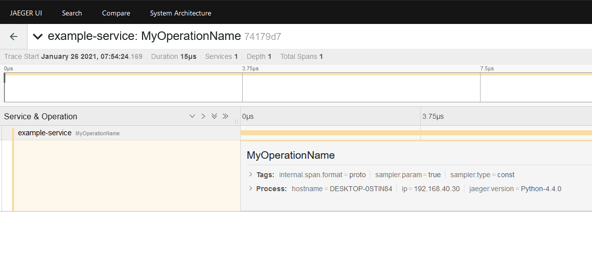
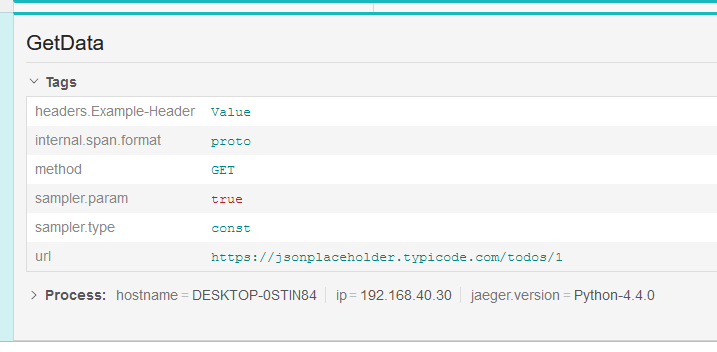
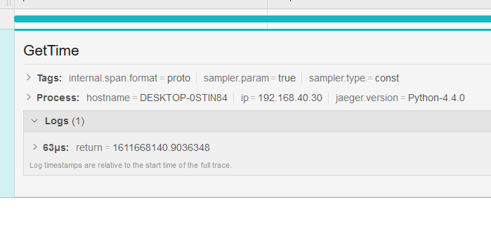

Quickstart
Simple Tracing
Get the package from PyPI.
1 | |
Import and define an instance of the Opentracing Decorator class.
1 2 3 4 5 6 7 8 9 10 11 12 13 14 15 16 17 18 19 20 21 22 23 24 25 | |
Here, we're using the Jaeger implementation of OpenTracing for integration with the Jaeger tracing system. You can use any OpenTracing compatible tracer. For example, the Zipkin OpenTracing client
I can now annotate any function I want, in order to start generating and pushing traces to the Jaeger server.
1 2 3 4 5 | |
Be sure to give the tracer time to report traces so it can clear its buffers before exiting. Although, the worst thing that could happen if you forget this is that some of your traces will not show up.
1 2 3 4 5 6 7 8 | |
At this point, you should see traces start to show up in the user interface.

Obtain Span Reference
It's generally helpful to access the active Span while doing any sort of processing. This is so that you can do things like add tags, log arbitrary key/value information, etc.
You can configure the Opentracing Decorator to pass a reference to the Span you are within by passing the pass_span=True argument to the decorator.
1 2 3 4 5 6 | |
If you only desire access to the Span to tag function parameters and log function return values--take a look at the automatic parameter tagging feature for an easier way to do this.
Automatic Parameter Tagging
Enabling parameter tagging
You can configure the Opentracing Decorator to automatically tag function Spans with the names and values of the function arguments.
To clarify, if we have a function like this
1 2 3 | |
we may want to see the values for method, url, and headers in our Span
tags.
Simply set the tag_parameters flag on the decorator.
1 2 3 4 5 | |
Now our function parameters are tagged and added to the span.

Adding a tag prefix
You can set a tag prefix by using the parameter_prefix argument to the decorator.
1 2 3 | |
This will put devops.* in front of every automatically tagged parameter. This
is useful for avoiding collisions with tags from other applications.
Automatic Return Value Logging
Enabling return value logging
You can configure the Opentracing Decorator to automatically log function return values to the Span.
To clarify, if we have a function like this
1 2 3 | |
we may want to see log the return value from the api request to our Span for future analysis.
Simply set the tag_parameters flag on the decorator.
1 2 3 4 5 | |
Now our function return value is logged to the Span.

Adding a return prefix
You can set a return prefix by using the return_prefix argument to the decorator.
1 2 3 | |